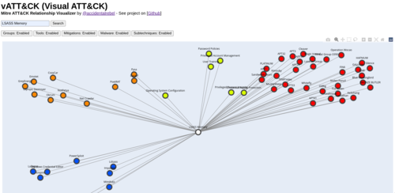

I have released a new cybersecurity-related tool called vATT&CK (Visual ATT&CK). It is a relationship visualizer for the Mitre ATT&CK framework.

What the tool does is that it makes a visual map of the searched technique and all the related information. You can watch a video of the tool in action here.
Each node will be colored depending on it's category. The color legends is as follows:
- Pink - Related subtechniques
- Orange - Malware that uses the searched technique
- Red - Groups that uses the searched technique
- Blue - Tools that use the searched technique
- Yellow - Mitigations
This tool is still in development. I plan to add a number of improvements such as:
- Ability to click on nodes and then update the visual map
- Ability to search not just by technique, but also by other categories
I also plan on releasing a live demo of the tool very soon in the hopes of getting feedback from the community.
For now, if you are interested in the project, you could visit the tool's Github project page or contact me for any comments or suggestions.